Shotgun¶
Overview¶
Shotgun is a customizable web-based Production Tracking system for digital studios, and is developed by Shotgun Software.
Using Deadline’s Shotgun event plugin, artists can automatically create new Versions for Shots or Tasks in Shotgun when they submit a render job to the farm. When the job finishes, Deadline can automatically update the Version by uploading a thumbnail and marking it as complete or pending for review.
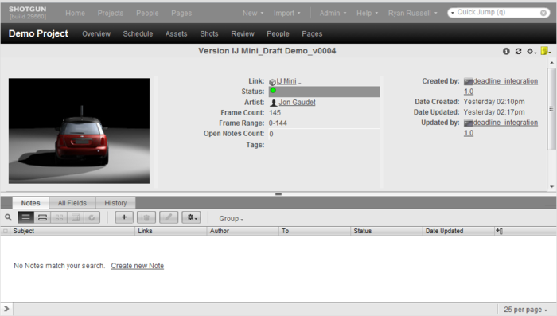Creating Versions¶
Versions can either be created automatically on submission (using the Shotgun Event Plugin), or done manually afterwards.
Automatic Version Creation¶
When you submit a new job to Deadline, you can have Deadline automatically create a new Version in Shotgun. This is done by connecting to Shotgun prior to submitting the job and choosing the Task that the job is for. The majority of the submission scripts that ship with Deadline include the Shotgun connection option. For this example, we will use Maya, but the process is basically the same for each submission script.
First, open the Pipeline Tools window via the Pipeline Tools button and navigate to the Project Management tab.
Choose Shotgun from the Project Management drop down, and then check the “Create new version” checkbox to begin. Enter your Shotgun Login username and password, and press Login. If the connection is successful, Deadline will collect the list of Tasks you are assigned to. If there are problems connecting, Deadline will try to display the appropriate error message to help you diagnose the problem. Once you login successfully, we will store the session token for you so you do not have to login again as long as the session token is still valid. All you have to do is to enter Login username and press Connect. You will be asked to login again once the session token is expired.
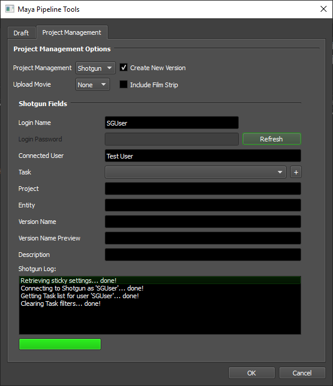After you have selected a Task, you must specify a Version name and a description. If you have configured Version name templates in the Shotgun event plugin configuration, you can select one from the drop down. You can also manually type in the version name instead.

After you have configured the Version information, press OK to return to the Maya submitter. The Shotgun settings will now contain the Version information you just specified. To include this information with the job, leave the Create New Version option enabled. If you want to change the Version name or description before submitting, you must first reconnect to Shotgun in the Pipeline Tools window.
Press the Submit Job button in the Maya submitter to finish the submission. If the Shotgun event plugin is configured to create the new version during Submission, the log report from the Shotgun event plugin will show the Version’s ID. Otherwise, the Version won’t be created in Shotgun until the job completes.
You can view the log report for the job by right-clicking on the job in the Monitor and selecting View Job Reports.
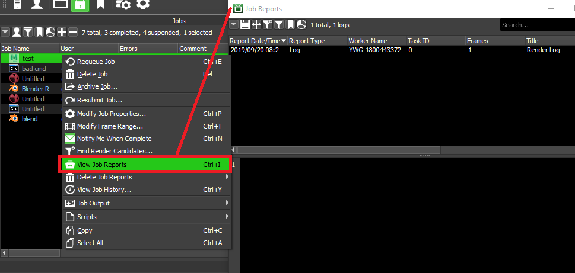Manual Version Creation¶
To manually create a Version from a completed job, right-click on the job in the Deadline Monitor and select Scripts -> Integration -> Create Shotgun Version. This will bring up the Shotgun browser so that you can connect, pick the appropriate Task, and specify a Version name and description. After specifying the appropriate information, press OK to create the new version.
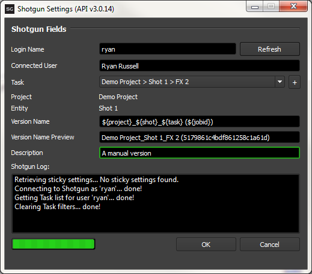Selecting An Existing Version¶
When using the Draft Monitor submitter it’s possible to edit an existing Shotgun version rather than creating a new one.
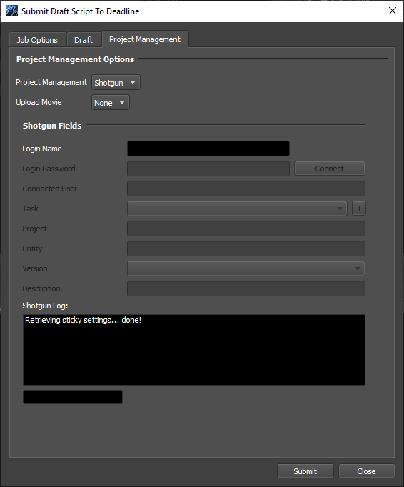Choose Shotgun from the Project Management drop down, enter your Shotgun Login username and password, and press Login. If the connection is successful, Deadline will collect the list of Tasks you are assigned to. If there are problems connecting, Deadline will try to display the appropriate error message to help you diagnose the problem. Once you login successfully, we will store the session token for you so you do not have to login again as long as the session token is still valid. All you have to do is to enter Login username and press Connect. You will be asked to login again once the session token is expired. After you have selected a Task, you can select a Version for that Task.
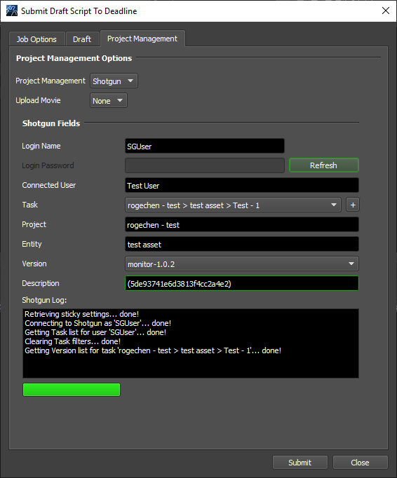You can now submit the job as normal. When the job finishes, the rendered movie will automatically be uploaded to the selected Version.
Advanced Workflow Mode¶
When setting up the Shotgun event plugin, you can enable an Advanced Workflow Mode. This mode allows you to create Versions by selecting a Task, or by selecting a Project and Entity. Studios that don’t use the Task-centric approach will probably find the Advanced Workflow Mode more suitable to their needs.
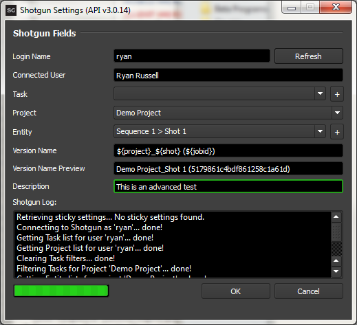Setup¶
Follow these steps to setup Deadline’s connection to Shotgun.
Create the API Script in Shotgun¶
In Shotgun, you must first create a new API script so that Deadline can communicate with Shotgun. This can by done from the Admin menu.
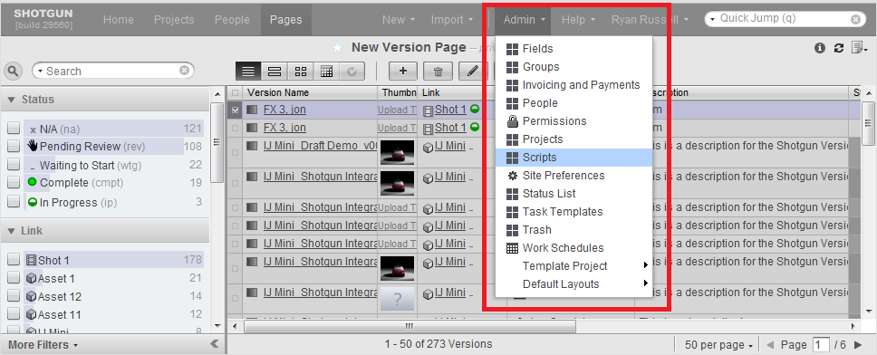After the Scripts page is displayed, press the [+] button to create a new script, and enter the following information in the window that appears. If you can’t see one or more of the following fields, use the More Fields drop down to show them.
Script Name: deadline_integration
Description: Script for Deadline integration
Version: 1.0
Permission Group: API Admin

After you have created the new script, click on the deadline_integration link in the Scripts list and note the value in Application Key field (it’s a long key consisting of alphanumeric characters). You’ll need this key when configuring Deadline’s Shotgun connection in the next step.
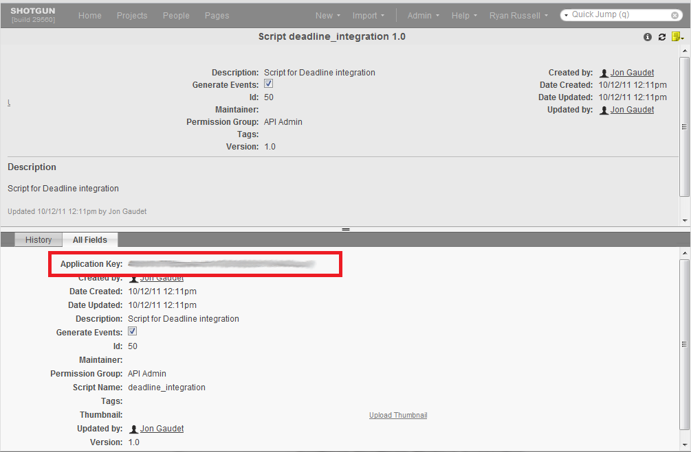Configure the Shotgun Connection¶
After you have created the Deadline API Script in Shotgun, you can now configure the Shotgun event plugin from the Deadline Monitor. Enter Power User Mode from the Tools menu, and then select Tools -> Configure Events.
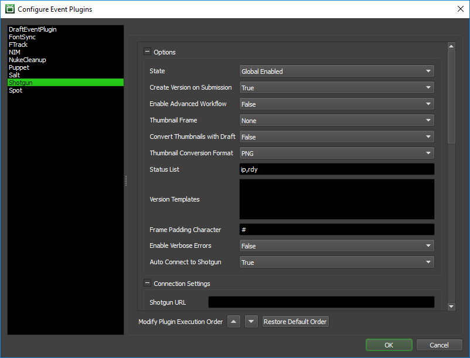The event plugin settings are split up into a few sections. The most important sections are the Options and Connection Settings, as these control how Deadline connects to Shotgun. In most cases, the Field and Value Mapping sections can be left alone because they map to fields that exist in the default Shotgun installation. Only studios that have deeply customized their Shotgun installations might have to worry about changing the Field and Value Mapping settings.
Options
This section contains general high-level options that control the behaviour of the Deadline’s Shotgun integration.
State: There are two different states that an Event Plugin can be in: Global Enabled or Disabled. In order for Deadline to connect to Shotgun, the State must be set to Global Enabled.
Create Version On Submission: If enabled, Deadline will create the Shotgun Version at time of submission and update its status as the job progresses. Otherwise, the Version will only be created once the job completes.
Enable Advanced Workflow: If enabled, the user can select a Project and Entity instead of just a Task.
Thumbnail Frame: The frame to upload to Shotgun as a thumbnail.
Convert Thumbnails with Draft: Whether or not to attempt to use Draft to convert the Thumbnail frame prior to upload.
Thumbnail Conversion Format: The format to convert the Thumbnail to prior to upload (see above).
Status List: The Deadline Shotgun UI will only show tasks that have a status in this list.
Version Templates: Presets for Version names that users can select from (one per line). Available tokens include ${project}, ${shot}, ${task}, ${user}, and ${jobid}. For example:
${project} - ${shot} - ${task}
${project}_${shot}_${task} (${jobid})
Frame Padding Character: Specifies the character that should be used for frame padding. Note that RV should use ‘@’ and Python style frame padding also accepts: ‘%’, ‘0’, ‘#’, or ‘d’ as frame padding characters.
Enable Verbose Errors: Whether or not detailed (technical) error information should be displayed when errors occur while connecting to Shotgun.
Auto Connect to Shotgun: Whether or not a connection to Shotgun should be automatically made when the pipeline tools dialog is opened.
Connection Settings
Shotgun URL: Your Shotgun URL.
Shotgun Proxy: Your proxy (if you use one).
No SSL Validation: Disables SSL Validation if set to ‘True’.
API Script Name: The name of the API script you created in Shotgun earlier (
deadline_integration).API Application Key: The key from the script you created in Shotgun earlier (it’s a long key consisting of alphanumeric characters). If using the Deadline Secrets Management feature, this parameter will be saved and retrieved based on the Event Plugin Secrets Access Level.
Shotgun Field Mappings
These are the Version fields that Deadline is expecting to exist in Shotgun. The default values match those from a default Shotgun installation, so you will only have to edit these settings if you have customized the Version Field names in your Shotgun installation.
Note that some of the Fields you can specify aren’t created by default in Shotgun. You will have to manually create those fields in Shotgun and specify their names here, if you wish to use them. An example of such fields would be Deadline Job ID, and Average/Total Render Time.
Status Value Mappings
These are the Version status values that Deadline is expecting to exist in Shotgun. The default values match those from a default Shotgun installation, so you will only have to edit these settings if you have customized the Version Status values in your Shotgun installation.
Draft Field Mappings
Draft Template Field: The field code for a Task field that contains a Draft Template relevant to the Task. If this is specified, Deadline can automatically pull in the specified template at submission time.
Test the Shotgun Connection¶
You can test the Shotgun connection with your username/password from the Deadline Monitor by selecting Scripts -> Integration -> Test Integration Connection. This will bring up the Test Integration Connection dialog.
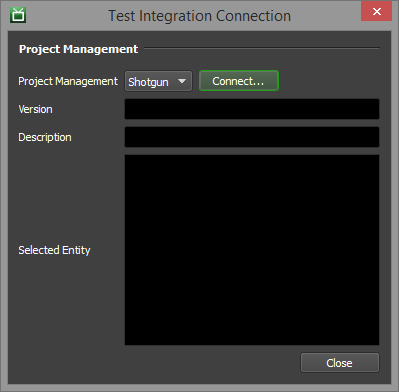Choose Shotgun from the Project Management drop down, and then press Login. If the connection is successful, Deadline will collect the list of Tasks you are assigned to. If there are problems connecting, Deadline will try to display the appropriate error message to help you diagnose the problem.
If you already connected to Shotgun before, you do not have to type password again. You can simply press Connect to connect to Shotgun.
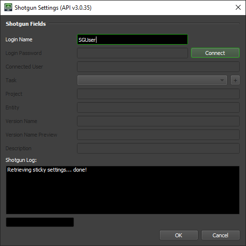Set up Shotgun Columns in the Deadline Monitor¶
Deadline uses the job Extra Info properties 0 to 5 for Shotgun specific settings, and you can configure the columns in the Job List in the Monitor to properly represent these settings. In the Monitor, enter Power User mode from the Tools menu, and then select Tools -> Configure Repository Options. Find the Job Settings section and click on the Extra Properties tab. It will show the following:
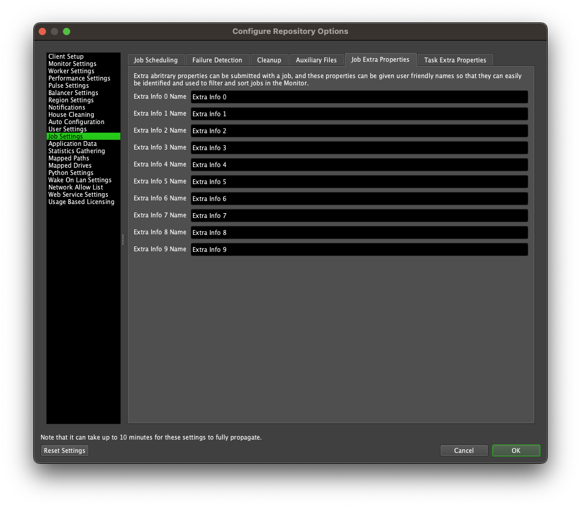Rename the Extra Info properties as shown in the following image. After committing these changes, you will now be able to see these Shotgun specific columns in the Job List in the Monitor.
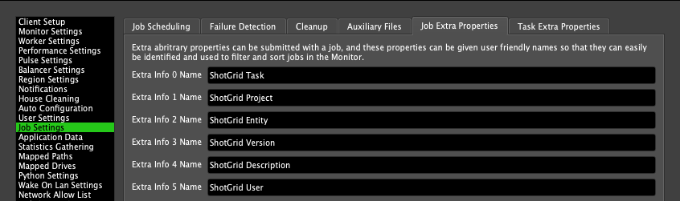FAQ¶
Which editions of Shotgun does Deadline support?
Deadline supports the Studio and Partner editions of Shotgun, because those editions include the necessary API access.
Which versions of Shotgun does Deadline support?
Deadline supports Shotgun 2.3 and later.
Error Messages and Meanings¶
This is a collection of known Shotgun error messages and their meanings, as well as possible solutions. We want to keep this list as up to date as possible, so if you run into an error message that isn’t listed here, please contact Deadline Support and let us know.
Currently, no error messages have been reported for this event plugin.

{kind=link}
{kind=link}
{kind=link}
{kind=link}
{kind=link}
{kind=link}
{kind=link}
{kind=link}
{kind=link}
{kind=link}
{kind=link}
{kind=link}
{kind=link}
{kind=link}
{kind=link}
{kind=link}
{kind=link}
{kind=link}